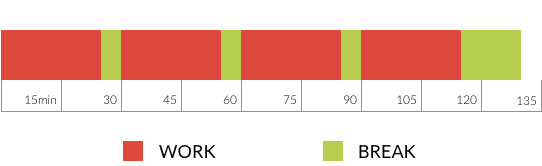

How to make the best of school?
(and get better marks)
What about?
- having better marks?
- having more freetime?
- being less stressed?
- even enjoying school?
Easy! Pay attention to what follows.
But first stop making excuses! and...
...change your Frame of Mind
- You can be good at every subject.
- Find the positive aspect of school, whoever the teacher.
- Chase negative emotions.
- There is no failure, only feedback.
Let's get rid of some misconceptions

Rereading passively your books and notes is not efficient (and a waste of time)!
Reread if you need to understand but it won't be enough to remember for the long term.
Sparse highlighting is OK for retrieving important points later on in the text book.
But it's an ineffective way to remember the material.
Highlighting a text doesn't put it magically in your brain!
Don't rush to the solution of a problem if you can't solve it!
Merely knowing the solution won't help you solve similar problems.
It's the process of searching by yourself that is important.
We are bad at multitasking, especially if the taks involves concentration and effort!
Each distraction reduces the amount learnt!
Each distraction increases the time to learn the material!
Multitasking is doing BADLY several things at the same time!

Cramming is a very very bad idea!
What you've learnt during a cramming session will fade very rapidly (don't waste your time!)
Learning takes time, practice and rest. Be nice with your brain.
Cramming or doing an assignment at the last minute means stress. Don't you want to be cool?
Stop doing that!
- Don't only reread your material!
- Highlighting only doesn't work!
- Rushing to the solution is not solving a problem!
- Stop multitasking, you don't do any task properly!
- Stop waiting for the last minute!
What should I do then?
- Read the material,
- understand it,
- question it,
- ask yourself questions.
- Link the information with what you already know.
- What is similar, different?
- Make analogies with concepts you are familiar with.
- How would you use it in your daily life?
Teach the material!
- to a real schoolmate, an imaginary friend, your grandmother, whoever.
- Do it out loud.
- Write explanations and draw schemas if necessary.
Hide and recall what you want to learn
- Read the material
- understand it
- hide it
- and then recall it from memory, with your own words.
Solve problems yourself!
- Spend time trying to solve them, struggling is learning!
- Solve different types of problems in a learning session, don't do similar ones in a row.
If you need to peek at the solution:
- Study each step, understand why they are needed.
- Redo the exercise alone explaining each step to yourself.
- Redo a similar exercise later on or one or several days later.
The good ways to learn
- Read, understand, ask yourself questions.
- Link the information with what you already know.
- Teach the material.
- Hide and recall what you want to learn.
- Solve problems yourself, don't rush to the solution.
- Self explanation of the steps during problem solving.
- Do exercises.
- If you struggle, you're learning!
So, when should I apply these techniques?
Space your revisions, learn and revise a bit everyday.
- In the evening
- Revise what you've just learnt during your schoolday.
- Revise the subjects you will have the next schoolday.
And how long are the sessions?
Work means focus, without any distraction!
Do whatever you like during your breaks, have coffee, play guitar, juggle, have a sweet, etc.
When to learn and revise?
- Learn and revise a bit everyday, regularly.
- 25mn of work, a 5mn pause with a reward, 25mn of work, and so on.
- Your brain needs pauses, time and sleep to assimilate the material.
- By spacing your revisions, your brain works for you, during your freetime!
For a good learning session
- Focus to the material, no distraction.
- No radio or TV, only classical music is allowed.
- twitter, facebook, youtube, sms : OFF!
At school
- Take notes instead of getting them passively.
- Read your notes before class.
- Make the best of the class, otherwise you're losing your time!
Tame your thoughts
- Focus on the time you spend, not on the outcome.
- Parasite thoughts? Write them down for later.
Have a life!
- Sleep enough.
- Do sport.
- Meet your friends.
- Cut down junk information.
Now?
Apply these principles for a least one month.
and reap the benefits!
Credits
References:
- [1] Improving students’ learning with effective learning techniques: Promising directions from cognitive and educational psychology. Dunlosky, J., Rawson, K. A., Marsh, E. J., Nathan, M. J., & Willingham, D. T.
- [2] Better Grades, Less Effort. W. R. Klemm, D.V.M., Ph.D.
- [3] Divided Attention http://chronicle.com/article/Scholars-Turn-Their-Attention/63746/
- [4] Memory and emotion E. Kensinger, B. Uttl, Ohta, et al. 10.1027/1618-3169.54.3.243
- [5] www.memory-key.com Dr McPherson
- [6] How people Learn John D. Bransford, Ann L. Brown, and Rodney R. Cocking National academy Press 2004
- [7] How to succeed in College J. Golding, P Kraemer www.coursera.org/course/succeedincollege
- [8] Pomodoro technique F. Cirillo http://en.wikipedia.org/wiki/Pomodoro_Technique
- [9] Sleep Stages, Memory and Learning L. Dotto Canadian Medical Association Journal 1996
- [10] Learning How to Learn: Powerful mental tools to help you master tough subjects Dr. Terrence Sejnowski, Dr. Barbara Oakley https://www.coursera.org/course/learning 2014
Slides:
- Change your frame of mind:[2], [4], [10]
- Stop doing that:[1], [2], [3], [5], [10]
- The good ways to learn:[1], [2], [5], [10]
- When to learn and revise:[2], [5], [8], [9], [10]
- For a good learning session:[2], [3], [10]
- At school:[2], [7]
- Tame your thoughts:[]
- Have a life!:[2], [5], [9], [10]
pictures
References:
- [1] http://en.wikipedia.org/wiki/Highlighter#mediaviewer/File:Highlighter_pen_-photocopied_text-9Mar2009.jpg
- [2] http://commons.wikimedia.org/wiki/File:WikiWordplay_solution.png
- [3] http://en.wikipedia.org/wiki/Time_discipline#mediaviewer/File:Windup_alarm_clock.jpg
- [4] http://en.wikipedia.org/wiki/Biological_neural_network#mediaviewer/File:Brain_network.png
- [5] http://www.officeclipart.com/office_clipart_images/
- [6] http://www.clker.com/clipart-thinking-person-1.html
- [7] http://ayearofproductivity.com/pomodoro/
Slides:
- Stop doing that:[1], [2], [3]
- The good ways to learn:[4], [5], [6]
- When to learn and revise:[7]
Use a spacebar or arrow keys to navigate